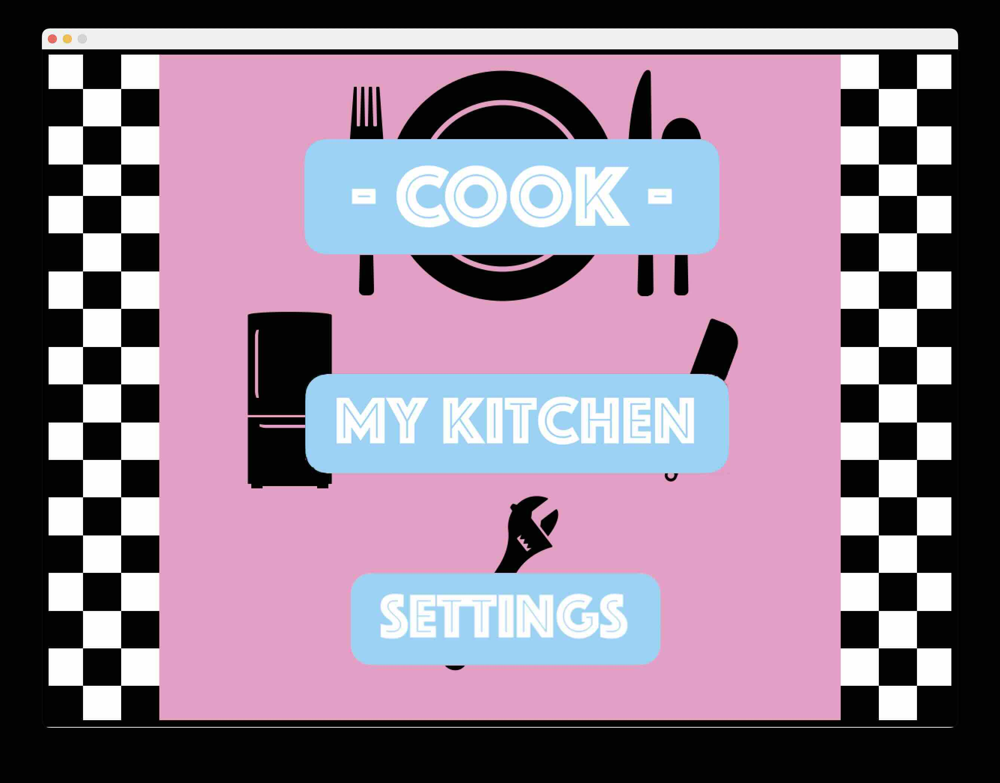
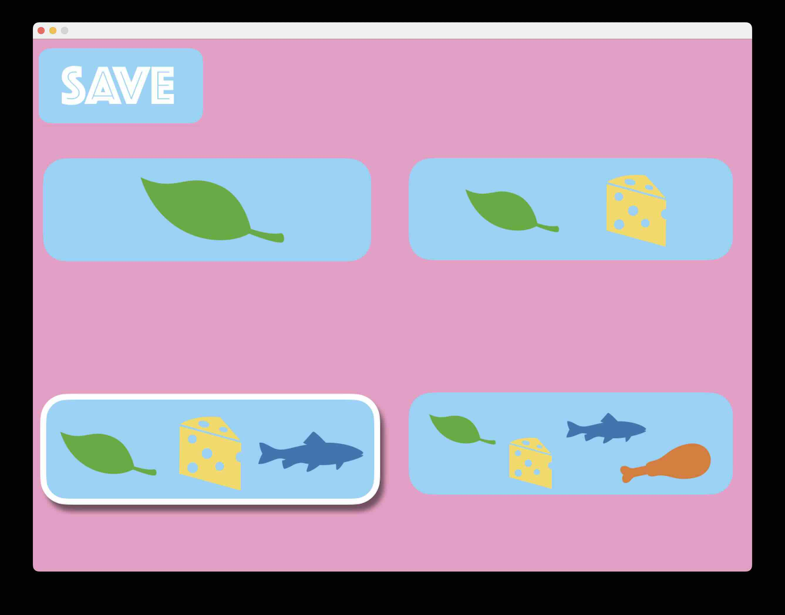

An A-Grade A-Level project that acted as my first venture into Java UI and user-facing design, the Baking and Cooking Assistant (B.A.C.A) is a Java Swing application that allows users to input ingredients they have on hand and receive meal suggestions based on those ingredients.
One focus of this application was to create a user-friendly interface through the use of imagery over text. This shows up in key areas like dietary selection, which uses icons to represent food types.
